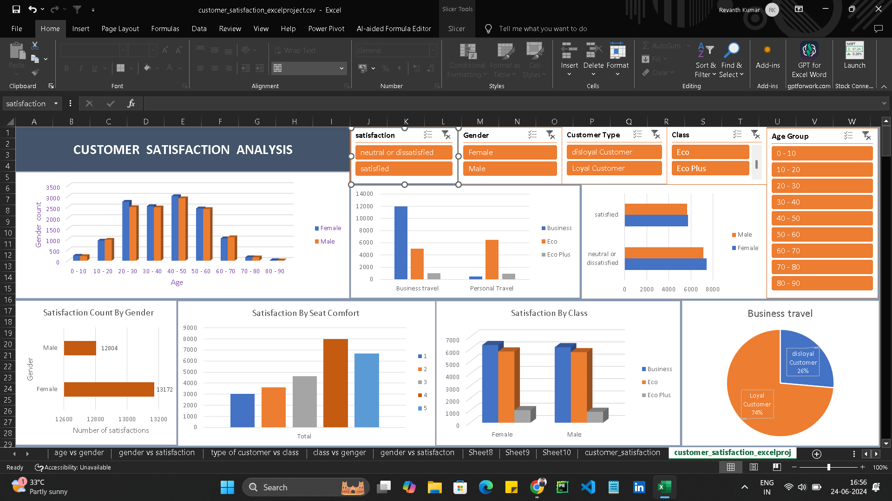
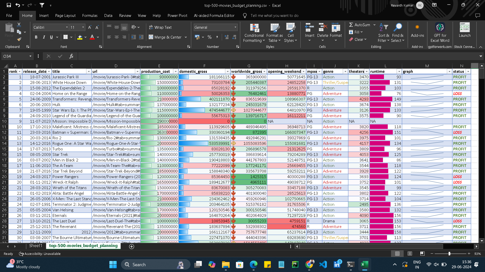

Students Performance Analysis
About
The "Students Performance Analysis" is a robust analytical tool designed to provide a comprehensive view of student performance metrics. Developed using Microsoft Excel, this project leverages various data visualization techniques to present key insights into student performance trends.
Project Photos

Description
This project involves analyzing various metrics related to student performance. Using Excel, data such as test scores, attendance records, demographic information, and extracurricular activities can be systematically evaluated. The analysis aims to identify patterns, trends, and correlations that can provide insights into factors influencing academic success. Visualizations like charts and graphs in Excel help in presenting findings effectively, aiding educators and administrators in making data-driven decisions to enhance educational outcomes.
Github LinkCustomer Satisfaction Analysis
About
The "Customer Satisfaction Analysis" is a robust analytical tool designed to provide a comprehensive view of customer satisfaction metrics. Developed using Microsoft Excel, this project leverages various data visualization techniques to present key insights into customer satisfaction trends.
Project Photos
Description
This project focuses on assessing and understanding customer satisfaction levels using Excel. It involves gathering feedback through surveys, reviews, or other feedback mechanisms and organizing this data for analysis. Excel's tools for data sorting, filtering, and pivot tables are utilized to aggregate and summarize customer responses. Through statistical analysis and visual representation of findings, such as satisfaction scores over time or across different demographics.
Github LinkSocial Media Engagement Analysis
About
The "Social Media Engagement Analysis" is a robust analytical tool designed to provide a comprehensive view of social media engagement metrics. Developed using Microsoft Excel, this project leverages various data visualization techniques to present key insights into social media engagement trends.
Project Photos
Description
This project centers on analyzing social media engagement metrics to evaluate the effectiveness of social media campaigns or brand presence. Excel is used to collect and organize data such as likes, shares, comments, and follower growth across various platforms. Techniques like sentiment analysis, engagement rate calculation, and trend analysis are applied to interpret social media performance. Visualizations like trend lines, bar charts, and pie charts in Excel help in presenting.
Github Link